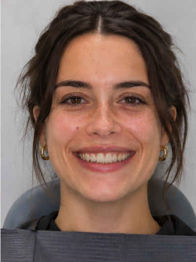
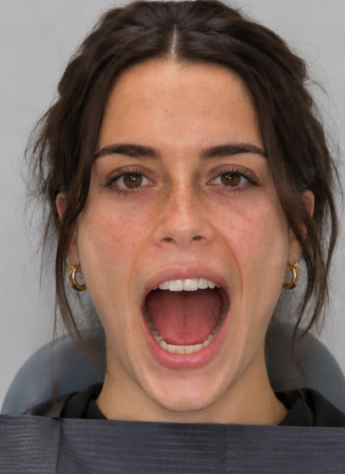
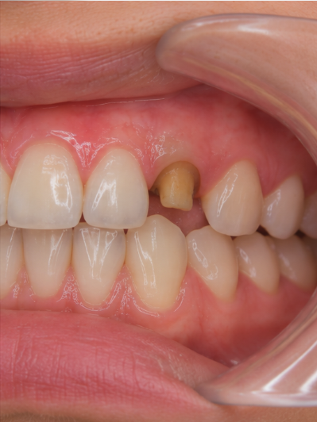

d
MR
{{ todayLabel }}
Let's get designing, Maya.
{{ specialtyLabel }}
{{ tierLabel }}
{{ statusNote }}
Next in your queue
{{ hero.item }}
Tooth {{ hero.unn }} · {{ hero.reason }}
Design due{{ hero.due }}At risk
{{ queueHeading }}
Browse all orders
Tooth
Case
Due
{{ row.unn }}
{{ row.item }}
{{ row.sub }}
{{ row.due }}
At risk
Nothing matches those filters.
Assigned to me and Unclaimed are mutually exclusive.
Today
14
cases designed
{{ avgValue }}
avg per case
98%
on time
All orders
Orders.
Patient
Practice
Items
Status
Design due
{{ o.patient }}
{{ o.orderCount }}
{{ o.flagText }}
{{ o.practice }}
{{ o.doctor }}
{{ o.items }}
{{ o.lab }}
{{ o.status }}
{{ o.dueDate }}
{{ o.dueSub }}
Your submitted designs
Design QA.
{{ q.title }}
{{ q.meta }}
Last 30 days
96%
passed first time
Two returns this month, both on anterior shade calls. Worth a look at the layering guidance in Training.
Capabilities and levels
Training.
Your focus areas
{{ fa.label }}
{{ fa.level }}
Recent feedback
"Anterior layering on refabs — read the QC note before you touch the incisal third. Two returns came from starting the sculpt first."
Design lead · Aug 20
"Cleared for Level 4 anterior. Veneer cases now route to you."
Design lead · Aug 4
Before you design
Task · {{ taskType }}
{{ brief.title }}
Design due
{{ brief.dueLong }}
{{ headerFacts }}
{{ hc.label }}
Gets a refab if missed
{{ brief.riskLine }}
{{ brief.measureValue }}
{{ brief.measureLabel }}

Full face, smiling

Full face, mouth open

Intraoral
{{ brief.photoNote }}
{{ brief.doctor }} wants
Chair overrides are shown in blue.
Same patient
{{ pl2.label }}{{ pl2.text }}
Shade {{ brief.shade }}. Use it as context for the incisal edge.
Case info
{{ ik.label }}{{ ik.value }}{{ ik.sub }}
Tags
{{ it.label }}{{ it.value }}
Nothing matches this filter.
{{ cm.text }} · {{ cm.t }}
{{ cm.who }}{{ cm.t }}@you
{{ cm.text }}
To
No other notes on this case.
{{ inn.init }}{{ inn.who }}Doctor note
“{{ inn.body }}”
{{ inn.meta }}
{{ inn.kind }}{{ inn.meta }}
{{ inn.body }}
Keep {{ keepName }} as is?
Tell QC why. This travels with the file.
Mark up scan
Settings
This case has its own settings
Theme
Show keystrokes
3D viewer background
Tool order
Reorder the Design tools and the visualization toolbar. Tools wiggle while you rearrange; drag one to a new spot. Visualization tools can move within their own group.
Hotkeys
Click a key, then press the new one. Backspace clears it, Esc cancels.
{{ hr.label }}
Drag tools to rearrange
{{ brief.patientShort }}
·
{{ brief.editorTitle }}
Refab
Design due {{ brief.dueShort }}
{{ brief.dueIn }}
{{ ss.label }}
{{ dt.label }}
{{ tipKey }}
{{ tipName }}
{{ tipDesc }}
{{ tipStatus }}
Automated
{{ reviewTitle }}
{{ reviewNote }}
Reverted to the original scan. Dandy’s trim is undone.
Selection
{{ trimHint }}
{{ modeTipKey }}
{{ modeTipName }}{{ modeTipDesc }}
Radius
{{ trimRadius }}
Select through mesh
Actions
Uses your current mesh selection.
Two bite scans landed. Both are in use.
Bite 1 · rightIn use
Bite 2 · leftIn use
Lower full archReference
Aligned automatically from both bite scans.
Mean deviation0.04 mm
Max deviation0.11 mm
Select a criterion to inspect.
VDO [mm]
{{ vdoLabel }}
Overlap
{{ ovLabel }}
Overlapping contacts
{{ penLabel }}
Drag in the viewport to slide the lower arch. Right-drag or Shift-drag still pans.
Brush
{{ sl.label }}
{{ sl.value }}
Source
1,284 points detected. The margin dips subgingival on the mesial — worth two nudges.
‹ Prev
Crown {{ brief.unn }}
Next ›
↖
↑
↗
←
4.2°
→
↙
↓
↘
No undercuts at this axis. Optimize would shift it 0.3°.
Suggested by Dandy
Bio-difficulty
Copy source
{{ copyHint }}
Set the front view
Orbit until the arch faces you square, then save. Everything downstream uses this orientation.
Align to the patient
Photo opacity
{{ frontOpacityLabel }}
Photo zoom
{{ frontZoomLabel }}
The photo sits behind the scan, so the front view matches the face rather than the scan's own axes.
This angle, zoom and position is now the front view the doctor and QC will see.
Start the crown from
{{ crownCurLabel }}{{ crownCurTag }}
{{ mlNote }}
How is this generation?
{{ fbThanksText }}
What was off?
Dandy ML · {{ genStage }}
{{ genTimeLeft }}
Reference tooth for Dandy ML
ML still generates a new crown. This tooth only guides its shape.
Generations
Central incisor templates
6 of 42
Filtered to #9 automatically.
Mimic from
Applies right away. No regeneration needed. The doctor asked for a match to #8, which makes the contralateral the strongest reference on this case.
Brush
Clearance
Reference
{{ activeToolName }}
Mode
Material spec0.60 mm · zirconia
Thin areas are pushed outward until they meet the spec. The last 1 mm at the margin is left thin on purpose.
{{ angleHelp }}
Spread along the line
The CEJ is the line where the crown meets the gum. Trace it along the cervical edge, or let Dandy find it, then reshape how the crown emerges from the tissue.
{{ ts.label }}
{{ ts.value }}
{{ mcTitle }}
{{ mcBody }}
Drag a margin point on the scan to reshape the line.
Move the line across the crown. Everything on the shaded side is removed when you apply the cut.
Replace this crown with a mirror of the opposite tooth's restoration. The intaglio is left behind.
{{ thkStatus }}
Cusps and contacts can grow, so recheck anything you cut against the opposing or adjacent teeth.
0.72
→
{{ howCaption }}
Double-checking your design
Checking it against the case and the doctor's notes. {{ chkPct }}
{{ sumTitle }}
{{ it.name }}
{{ it.num }}
{{ it.note }}
{{ pl.name }} {{ pl.num }}
What you changed
How was the generated crown?
Thanks, noted.
{{ calloutKind }}
{{ calloutBody }}
{{ calloutMeta }}
{{ toast }}
0.10mm0.08mm0.06mm0.04mm0.02mm0.00mm
{{ heatmapName }}
Alignment grid
Show grid
Opacity
{{ gridOpacityLabel }}
Scale
{{ gridScaleLabel }}
Turn on Reference line or Reference markers below, then drag the line or any marker to adjust it.
Flags on this design
{{ flagCountLabel }}
{{ fg.label }}
{{ fg.count }}
{{ fl.title }}
{{ fl.where }}
{{ fl.body }}
{{ fl.fix }}
{{ fl.statusText }}
Reopen
Scans on this case
Working scans
Opacity
{{ sw.opLabel }}
Stone
Upper references
Opacity
{{ su.opLabel }}
Stone
Lower references
Opacity
{{ sl2.opLabel }}
Stone
Shortcuts for {{ scTitle }}
{{ gp.label }}
{{ it.name }}
{{ it.keys }}
{{ vzCard.group }}
{{ vzCard.title }}
{{ vzCard.desc }}
Current
Generation {{ mlGenLabel }}
{{ cmpRightLabel }}
{{ brief.prevDate }}
Design submitted.
{{ submittedNote }}
{{ lbCaption }}
{{ lbMeta }} · {{ lbCount }}
{{ lbZoomLabel }}
Scroll to zoom · drag to pan · ← → to switch · Esc to close
This case, start to finish
Filter
{{ tlSelTitle }}
{{ tlSelDate }}
Select an event with a scan or design attached to view it here.
You have been here before
Pick up where you left off?
You started this case at {{ draftAt }} and stopped after {{ draftMins }}. The autosave is intact — prep, margin and the crown you had chosen.
Defer this case
Why are you passing?
It goes back to routing with your reason attached, so it lands somewhere better next time.
{{ actTipKey }}
{{ actTipName }}{{ actTipDesc }}
{{ toast }}